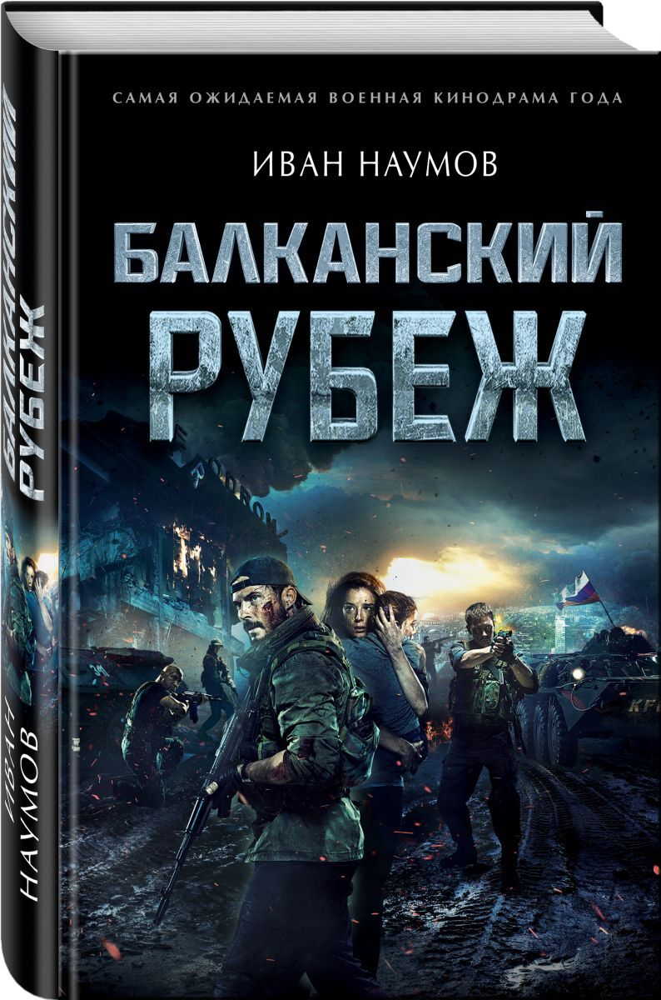
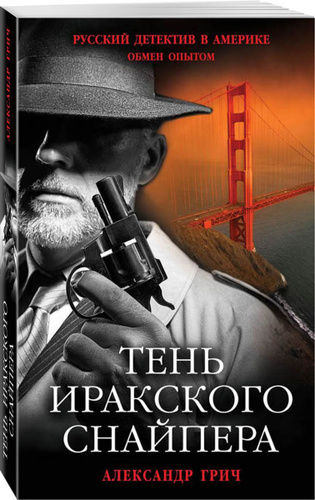
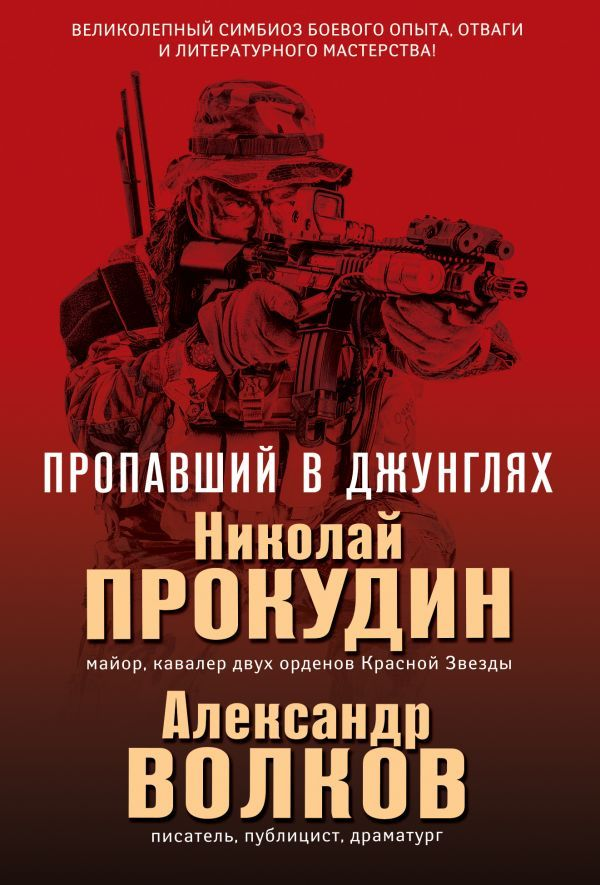

Самолет оторвался от взлетно-посадочной полосы, набрал высоту и взял курс на Батуми. Когда он был уже на предпосадочной прямой и выпустил шасси, в дверь пилотской кабины постучались. Один из летчиков посмотрел в глазок и увидел лицо бортпроводницы. Не заметил, что она ранена. Открыл дверь. И тотчас получил в лицо пять пуль.

«Балканский рубеж»
Югославия. 1999 год. Российская спецгруппа получает приказ взять под контроль аэродром Слатина в Косово и удерживать его до прихода подкрепления.Но этот стратегический объект крайне важен албанскому полевому командиру и натовским генералам.

«Тень иракского снайпера»
В Сан-Франциско один за другим погибают два известных бизнесмена. В обоих случаях почерк убийцы одинаков: жертвы усыплены снотворным и задушены голыми руками. У обоих на кистях рук оставлена надпись по-латыни: "Опоздание недопустимо".

«Пропавший в джунглях»
Обстановка в Центральной Америке накалена до предела. Отряды контрас, направляемые американскими инструкторами, регулярно атакуют советско-кубинские базы, расположенные на территории Никарагуа. Для ответного удара штаб ГРУ решает задействовать группу спецназа "Дельфин". В число бойцов входит и бывший "афганец" капитан Станислав Воротин.